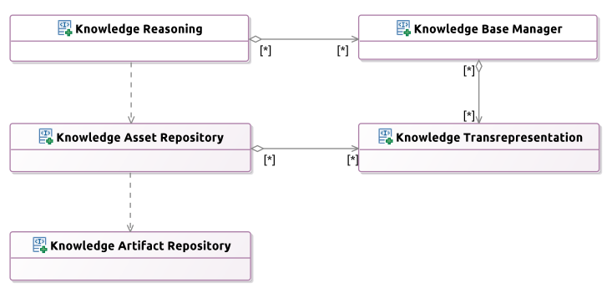

PIM to PSM

The Java+Spring PSM is generated programmatically from the source,
normative PIM models
- OWL Ontologies
- Define the key API4KP terms and concepts
- Describe the platform capabilities
- Drive the controlled vocabularies used to exchange
information
- UML (Class) models
- Define the information models / resource types used by the
APIs
- Include ontology-driven controlled vocabularies
- OpenAPI Specs
- Define the services and API signatures
- Leverage the UML-driven datatypes
Client / Server Interfaces

Clients are provided with (client-side) Interfaces that expose the
API4KP Operations.
Servers, likewise, are expected to implement corresponding
(server-side) interfaces.
A client-side facade abstracts the supported transport mechanisms:
- Direct connection / component
- Mediated by a ReST-on-HTTP web proxy
Service Architecture

- Knowledge Artifact Repository
Abstracts some kind of persistence layer
- Knowledge Asset Repository
Provides access to Knowledge Assets, with search/retrieval and
content negotiation
- Knowledge Transrepresentation
Supports validation, parsing/serialization and (syntactic)
transformation of Knowledge Artifacts
- Knowledge Base
Structures Knowledge Assets into Knowledge Bases that can be
bound to a reasoner
- Knowledge Reasoning
Supports inference, querying, production and other kinds of
knowledge-driven processing